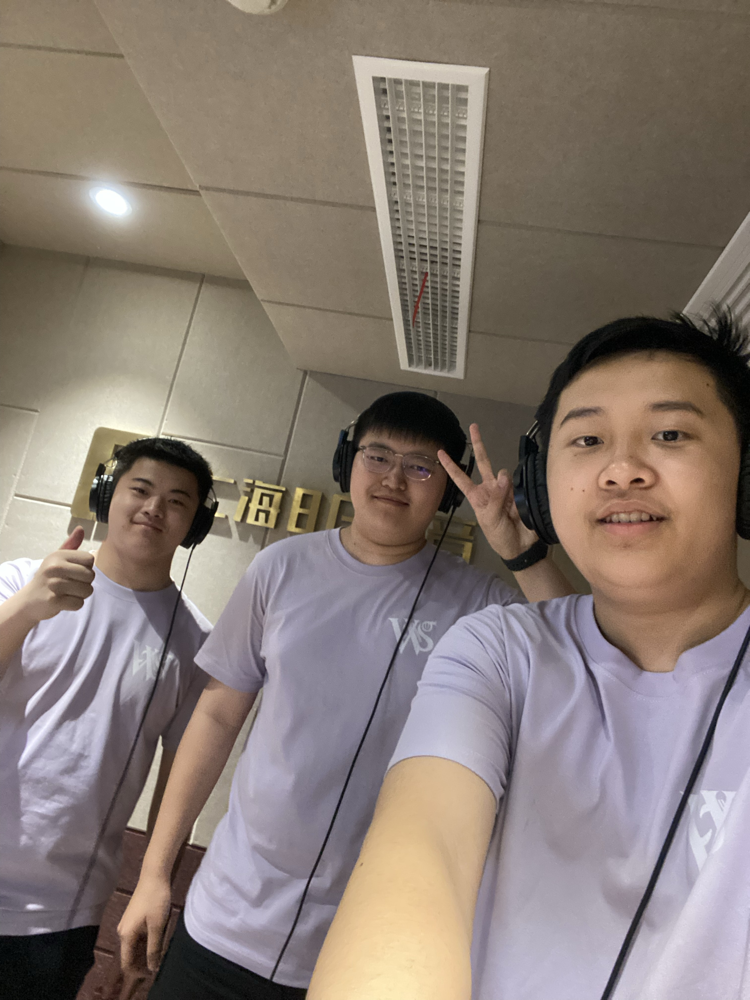
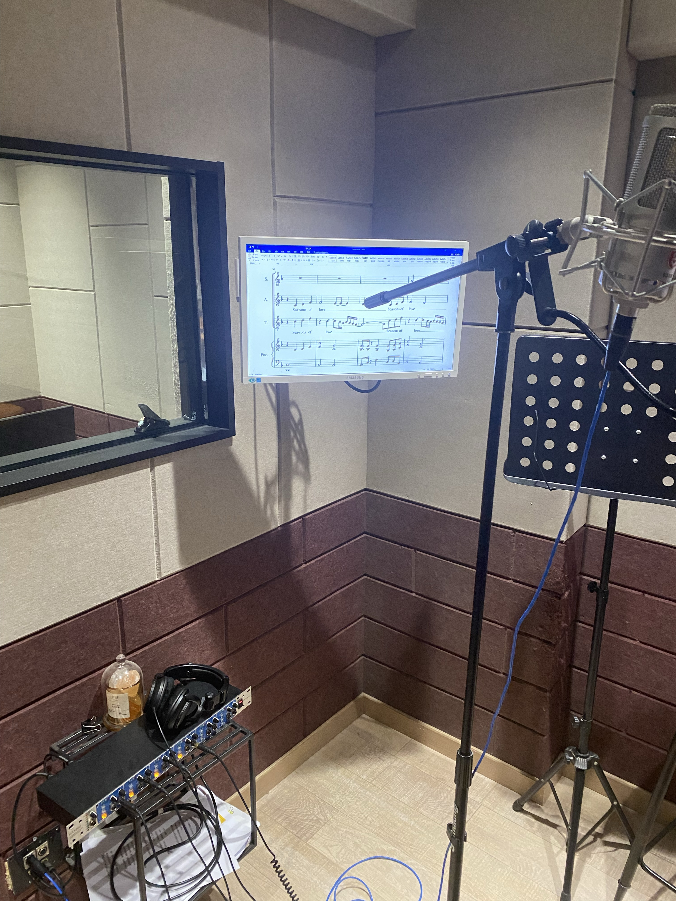

Finding harmony
Through rehearsals and performance, I learned to listen closely, trust the ensemble, and contribute to a collective sound.
Art · Drama · Stage
Theatre and music are how I explore emotion, imagination, and human connection. This page brings together the chorus and drama projects that have shaped me.
01 / Chorus
Singing together taught me how individual voices can become one shared expression.
Through rehearsals and performance, I learned to listen closely, trust the ensemble, and contribute to a collective sound.
Chorus gives me a way to connect with an audience through rhythm, emotion, and the energy of a live room.


02 / Drama
I use theatre to step into unfamiliar lives and make room for stories that deserve to be heard.
In Finding Neverland, I explored the imagination, friendship, and courage at the heart of this story on stage.
My own script, The Role That Was Not Here, is an original exploration of absence, identity, and the roles we create for ourselves.